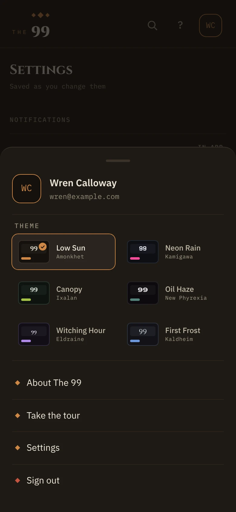
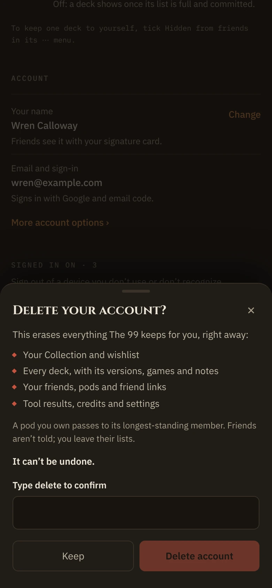

Account in Settings · R1
Account in Settings: the calls
Settings gains an Account section, and deleting an account happens in the app, in our own UI. Every frame is the SHIPPED page, menu, modal and landing, rendered with the shipped CSS; the new section and the delete screens are written as code over them (scratch-gen/proposal/). Copy marked DRAFT passes /copy-review before build.
Calls
1 · Placement: a section, last on Settings.
/settings gains Account after Your decks, in the shipped section pattern (mono head over a rule, rows split by --border). Last, because Delete account belongs at the foot of the page and the other three sections are what a player visits most. No /settings/account page and no sheet: settings stay in one place.2 · The menu's Manage account row leaves. Settings (already in the menu) is the one door. The menu goes About, Take the tour, Settings, Sign out (Admin where it applies). Nothing is lost: everything Manage account reached is in the section or behind its More account options link.
3 · In the app: name, devices, delete. Email, password and Google stay on Clerk's hosted page behind More account options ›, which leaves the app as Manage account does today. None of Clerk's prebuilt UI is loaded.
4 · One name, two doors. The name is the one Friends already edits (friends-head.tsx: "the ONE place a player sets their name"). Account's Change opens that same field with its shipped copy and write; Friends keeps its Change. The write also sets Clerk's first name so Clerk's page and emails agree (gap G2).
5 · Devices. Signed in on · N: one row per Clerk session, browser on device, when it was last active and where. This device is marked and has no Sign out (the menu's Sign out is that). Every other row has its own Sign out. No "sign out of all": one control per action.
6 · Delete is one modal with two screens. The shipped SocialModal (sheet on the phone, 440 dialog from md). D1 says what goes in plain words, the pods line, the paid-credits split when held, and It can't be undone; the player types delete, then Keep / Delete account (the app's shipped Keep-then-danger pair). D2 is Clerk's step-up, with ‹ back to D1.
7 · The confirm gesture is the typed word. Clerk only asks to re-verify when the last check is older than its window, so a player who signed in minutes ago never sees D2: the word is the gesture that always runs. A hold is hard with a switch or a screen reader; a second press is one slip.
8 · After: the public landing, signed out, with a toast. Your account is deleted. in the shipped toast, then gone. No goodbye page and no banner. Friends are not told.
SETTINGS · ACCOUNT · 390

Scrolled to Account, the last section. Big rows, 44px targets.
ACCOUNT MENU · 390

Manage account is gone; Settings is the door.
D1 · DELETE · 390

What goes, then the word. Delete account wakes when delete is typed.
D2 · CONFIRM IT'S YOU · 390

Clerk's step-up, drawn in our sign-in parts.
AFTER · 390

The public landing, signed out, with the shipped toast.